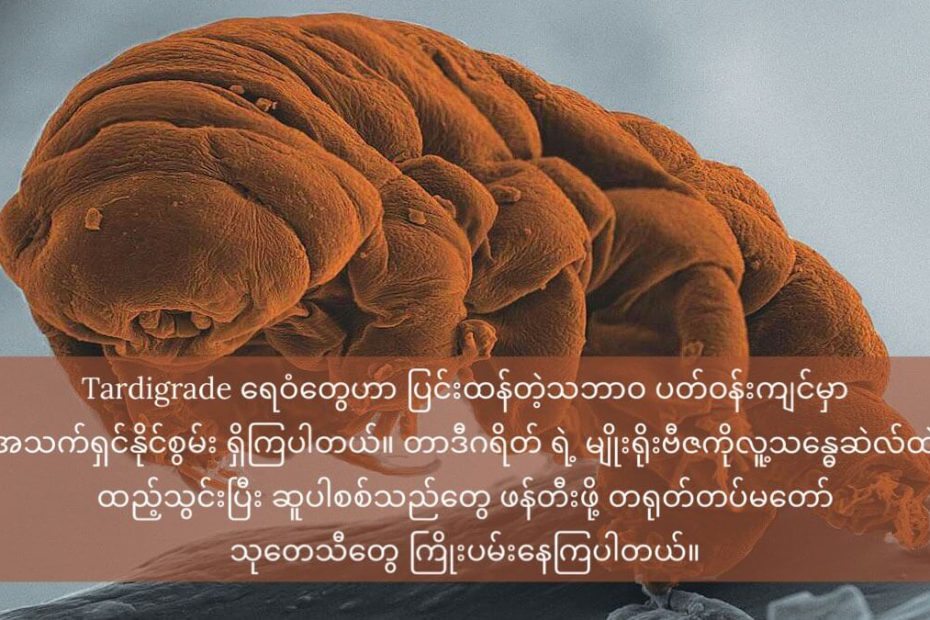

Tardigrade ခေါ် ရေဝံ တွေဟာ အလွန် အသက်ပြင်းတဲ့ သတ္တဝါတွေ ဖြစ်ကြပါတယ်။ ရေခမ်းခြောက်တဲ့ဒါဏ်၊ အပူအအေးဒါဏ် နဲ့ ရေဒီယေးရှင်း ဓါတ်ရောင်ခြည် ဒါဏ်တွေကို ခံနိုင်သလို အာကာသ လေဟာနယ် ထဲမှာလဲ အချိန် အတိုင်းအတာ တခုအထိ အသက်ရှင် နိုင်စွမ်း ရှိကြပါတယ်။
ဒီ တာဒီဂရိတ် ရေဝံ တွေရဲ့ မျိုးရိုးဗီဇကို လူ့ မျိုးရိုးဗီဇထဲ ထည့်သွင်း ပေါင်းစပ် လိုက်မယ်ဆိုရင် အစွမ်းထက်တဲ့ ဆူပါ စစ်သည်တွေ မွေးဖွားပေးနိုင်မယ်လို့ တရုတ် တပ်မတော်ရဲ့ သုတေသီ သိပ္ပံ ပညာရှင် တွေက ယုံကြည် ကြပါတယ်။ ဒီနည်းနဲ့ ရရှိမွေးဖွားလာတဲ့ လူသားတွေဟာ ရေဒီယို ဓါတ်ရောင်ခြည် သင့်မှုဒါဏ်ကို ခံနိုင်ရည် ရှိလိမ့်မယ်လို့ သူတို့က မျှော်လင့် ကြပါတယ်။
တရုတ်နိုင်ငံက သုတေသန ဂျာနယ်တစ်စောင် ဖြစ်တဲ့ Military Medical Sciences မှာ ဘီဂျင်းမြို့က စစ်သိပ္ပံ အကယ်ဒမီ (Academy of Military Sciences) က သုတေသီ တွေဟာ ဒီအချက်နဲ့ ပါတ်သက်တဲ့ သုတေသန စာတမ်းတစောင်ကို တင်ပြခဲ့ကြပါတယ်။
ဒီစာတမ်းမှာ တရုတ် စစ်သိပ္ပံ သုတေသီ တွေက ရေဝံ ရဲ့ မျိုးရိုးဗီဇ (gene) ကို လူသားရဲ့ သန္ဓေပင်မေဆဲလ် (human embryonic stem cells) တွေထဲကို ထည့်သွင်း ပေးနိုင်မယ် ဆိုရင် ဒီဆဲလ်ရဲ့ ရေဒီယို ဓါတ်ရောင်ခြည်ဒါဏ် ခံနိုင်စွမ်းအားဟာ မြင့်တက် လာလိမ့်မယ် လို့ တင်ပြ ထားကြပါတယ်။ သူတို့ရဲ့ သီအိုရီကို ထောက်ခံတဲ့ လက်တွေ့ သုတေသန ရလဒ် အချို့ကိုလဲ ဒီစာတမ်းမှာ တင်ပြ ထားကြပါတယ်။
သူတို့ရဲ့ စာတမ်းအရ ဒီ သုတေသနသာ အောင်မြင်ခဲ့မယ် ဆိုရင် အလွန် မာကြောတဲ့ စစ်သားတွေကို မွေးဖွားပေးနိုင် လိမ့်မယ်လို့ ဆိုပါတယ်။ ဒီ ဆူပါစစ်သည် တွေဟာ နျူကလိယ စစ်ပွဲကြီးမှာ အသက်ရှင်ကျန် ရစ်ခဲ့ကြလိမ့်မယ်လို့လဲ သူတို့က ယုံကြည် ကြပါတယ်။
တာဒီဂရိတ်တွေဟာ သိပ္ပံ ပညာရှင် တွေရဲ့ စိတ်ဝင်စားမှုကို အထူးခံရတဲ့ အကောင်လေးတွေ ဖြစ်ကြပါတယ်။ သူတို့ဟာ သက်ရှိတွေ အနက် ခံနိုင်ရည် အရှိဆုံး သက်ရှိတွေလဲ ဖြစ်ကြပါတယ်။ ဒီ အကောင်လေးတွေကို ကမ္ဘာအနှံ့ ရှာဖွေ တွေ့ရှိနိုင်ပြီး ကုန်းရော ပင်လယ်ထဲ မှာပါ အသက်ရှင်သန် နေထိုင် ကြပါတယ်။
သူတို့ရဲ့ အရွယ်ကတော့ အလွန် သေးငယ် ကြပါတယ်။ အရှည်က ၁ မီလီမီတာ ထက် သေးငယ်ပြီး ခြေချောင်း ၈ စုံ ပါဝင်ပါတယ်။
တာဒီဂရိတ် တွေဟာ လပေါ်ထိလဲ ရောက်ပြီး ကမ္ဘာကို အသက်ရှင်လျက် ပြန်ရောက် လာခဲ့ကြ ပါတယ်။ ရေနွေး ပွက်ပွက်ဆူ ထဲမှာတောင် တစ်နာရီ လောက်အထိ အသက်ရှင်နိုင် ကြပါတယ်။ ရေခဲအမှတ်အောက် ဒီဂရီ စင်တီဂရိတ် ရာကျော်အောင် အေးတဲ့ အခြေအနေ မှာလဲ အသက်ရှင် နိုင်စွမ်း ရှိကြပါတယ်။
အကယ်လို့ ဒီ အစွမ်းအစ တွေရဲ့ အစိတ်အပိုင်း နည်နည်းလေး လောက်ဖြစ်ဖြစ် လူသားတွေရဲ့ ကိုယ်ခန္ဓာက ရရှိခဲ့မယ် ဆိုရင်တောင် ဆူပါစစ်သည်တော် တွေ ဆိုတာ စိတ်ကူးယာဉ် သက်သက်မဟုတ်မှန်း သိသာ နေပါတယ်။
ဒါပေမယ့် ဒီလို ပေါင်းစပ်တာဟာ အန္တရာယ် မသေးလှသလို လွယ်ကူလှတဲ့ ကိစ္စ တစ်ခုလဲ မဟုတ်ပြန်ပါဘူး။ ဒီတော့ ဒီ သုတေသန ပညာရှင်တွေ တင်ပြထား သလို ရေဝံ ရဲ့ မျိုးရိုးဗီဇကို လူသား သန္ဓေဆဲလ် ထဲ အောင်အောင်မြင်မြင် ထည့်သွင်းနိုင်ခဲ့တယ် ဆိုတာက အတော်လေး အံ့ဩဖွယ်ရာ ရလဒ်ဖြစ်နေပါတယ်။
ဒီ စာတမ်းအရ မျိုးရိုးဗီဇကို အောင်မြင်စွာ ကူးပြောင်း နိုင်ရုံတင် မကပဲ ရရှိလာတဲ့ ဆဲလ် အသစ်ကလဲ ပုံမှန်အတိုင်း ရှင်သန်နိုင်တယ်လို့ ဆိုပါတယ်။ ဒါပေမယ့် တဖက်ကလဲ ဒီဆဲလ်ရဲ့ ပွားနှုန်းက ပိုမြန်လာတယ်လို့ ဆိုပါတယ်။
ရလဒ်က ဆဲလ်ရဲ့အသက်ရှင်သန်နိုင်စွမ်းကို ထိခိုက်မှု မရှိပဲ ဆဲလ်ပွားခြင်းကို အတိုင်းအတာ တခုအထိ မြင့်တက်လာစေတယ် လို့ ဒီ စာတမ်းမှာ တင်ပြ ထားပါတယ်။ အခုရလဒ်ကို အသုံးပြုပြီး စမ်းသပ်မှု နောက်အဆင့်ကို ဆက်လက် တက်လှမ်းသွားမယ်လို့ ရေးသား ထားပါတယ်။
လက်ရှိမှာ ဆူပါစစ်သည်တွေ မွေးဖွားဖို့ကတော့ အလှမ်းဝေးနေပါသေးတယ်။ ဒါပေမယ့် တရုတ် ပညာရှင် တွေရဲ့ နောက်ဆုံး ရည်မှန်းချက် ကတော့ ဆူပါစစ်သည် တွေကို မွေးဖွားပေးနိုင်ဖို့ ဖြစ်ပါတယ်။
Ref: Scientists Put Tardigrade DNA Into Human Stem Cells. They May Create Super Soldiers | Popular Mechanics
Tardigrade ရေဝံ ၏ မျိုးရိုးဗီဇအား လူ့ပင်မဆဲလ် အတွင်း ထည့်သွင်းပြီး ဆူပါစစ်သည်များ ဖန်တီးရန် တရုတ်သုတေသနပြု

May 11, 2023
Other Posts
- အင်္ဂါဂြိုဟ် ပေါ်တွင် ဧရာမ ရှေးဟောင်းမြစ်ကြီး ရှာတွေ့
- ကမ္ဘာ့အကြီးဆုံး အာကာသ မှန်ပြောင်းကြီး လွှတ်တင်မည်
- James Webb တယ်လီစကုပ်ကြီး ပတ်လမ်းပေါ် ရောက်ပြီ
- ကြယ်ကြွေတယ် ဆိုတာဘာလဲ
- နဂါးပြာမြစ်
- ဒီည မြန်မာနိုင်ငံက မြင်တွေ့ရမယ့် လအပြည့်ကြတ်ခြင်း
- ရှားပါး ရေဝက်များ တရုတ်ပြည်တွင် မျိုးတုန်းပျောက်ကွယ် သွားပြီ
- ဘာ့ကြောင့် ဂြိုဟ်တွေဟာ လုံးနေရတာလဲ
- သင့်ကြောင်ဟာ ဘယ်သန်လား ညာသန်လား
- ကြယ်ဖြူပုကို ပတ်နေတဲ့ ဂြိုလ်ကြီးတစ်လုံး တွေ့ရှိ